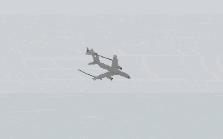
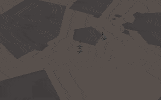
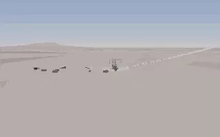
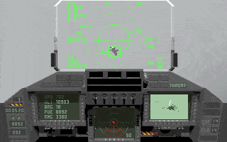
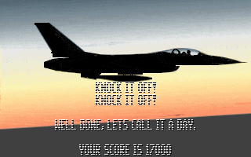
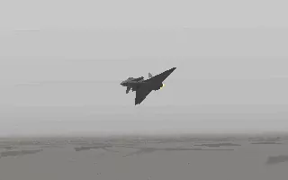

Gallery — Then & Now
Hover or tap to flip between 1993 and 2025 versions. Click to open in a lightbox.






A tribute to Digital Image Design’s 1993 classic — reimagined for 2025.
Released in 1993 by Digital Image Design and Ocean Software, TFX pushed the limits of PC hardware — real 3D environments, dynamic campaigns, and a cinematic camera — all on a 386 machine.
Non‑commercial fan tribute. All trademarks belong to their respective owners.
Drag the handle to compare Then (1993) vs Now (2025).
“TFX wasn’t just a flight sim. It was a prototype of the future.”
Hover or tap to flip between 1993 and 2025 versions. Click to open in a lightbox.
TFX: Then & Now is a purely non‑commercial, fan‑made tribute to the 1993 classic by Digital Image Design. The goal is to place original DOS‑era scenes next to modern 2025 reinterpretations in a respectful, like‑for‑like way.
Image credits: original screenshots captured from the 1993 game, modern visuals are AI‑assisted artwork guided and curated by the project author.